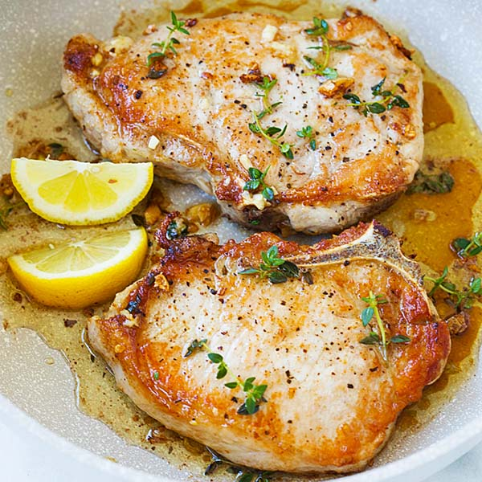

Garlic Butter Pork Chops

Ingredients
- 4 pork chops
- 1 tablespoon minced garlic
- 1 teaspoon paprika
- ¼ teaspoon salt
- ¼ teaspoon pepper
- 1 teaspoon onion powder
- 1 teaspoon garlic powder
- ½ tablespoon creole seasoning
- 1 teaspoon Italian seasoning
- 1 teaspoon melted butter
- 1 tablespoon olive oil
- 3 tablespoon unsalted butter
- 2 tablespoons parsley
Instructions
- Mix all dry seasoning together.
- Apply oil to pork chops and then rub on seasoning. Let sit for 5 minutes.
- Mix garlic, butter, and parsley together.
- Apply oil to skillet and cook pork chops for roughly 4 to 5 minutes per side.
- Add garlic butter to the skillet and the pork chops a couple minutes before the pork chops are finished.